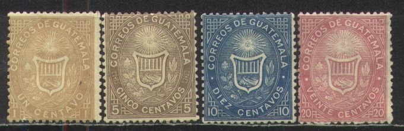
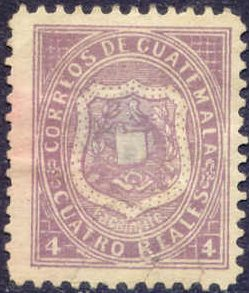
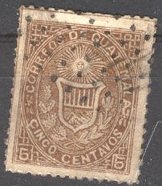
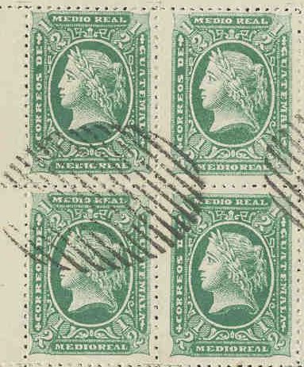
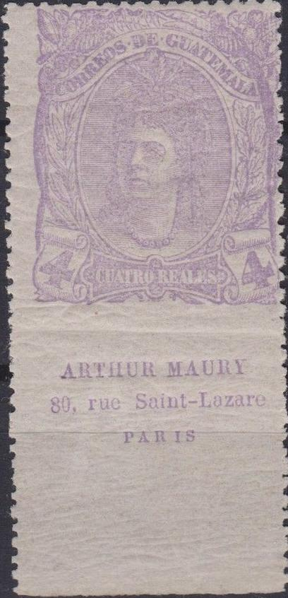
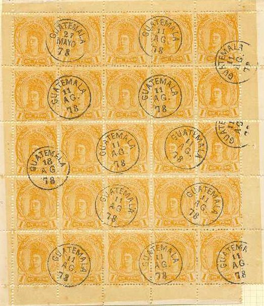

Star cancel and numeral cancel.
Return To Catalogue - Guatemala 1879-1885 - Guatemala 1886-1896 - Guatemala 1897-1920 - Guatemala miscellaneous
Note: on my website many of the
pictures can not be seen! They are of course present in the
catalogue;
contact me if you want to purchase the catalogue.


1 c brown 5 c brown 10 c blue 20 c red 4 r violet 1 P yellow
The values 1 to 20 c are perforated 14 x 13 1/2, the values 4 r and 1 P are perforated 12. A misprint 20 c blue seems to exist (extremely rare).
Value of the stamps |
|||
vc = very common c = common * = not so common ** = uncommon |
*** = very uncommon R = rare RR = very rare RRR = extremely rare |
||
| Value | Unused | Used | Remarks |
| 1 c | * | *** | |
| 5 c | *** | *** | I've seen a tete-beche pair. |
| 10 c | *** | *** | |
| 20 c | *** | *** | |
| 4 r | RRR | RR | |
| 1 P | RRR | RRR | |
In 1868 similar fiscal stamps with inscription "TIMBRE DE GUATEMALA" were issued (7 values).
Typical cancels:
Star cancel and numeral cancel.
The next forgeries are possibly produced by Senf (but I'm not 100% sure):

(This forgery has the word "FACSIMILE" incorporated in
the design below the shield)
In the next forgeries, the word "FACSIMILE" of the above forgery, has been coloured in (but is still faintly visible):


I've been told that these are forgeries, I have no further
information.
Spiro forgeries:
I have also seen Spiro forgeries of the values 1 c, 5 c, 10 c and 20 c. They can be recognized by their typical cancels:

The 1 c and 20 c also have five complete vertical lines in the upper part of the shield (genuine stamps have six complete lines).



Fiscal stamp 4 R blue with forged cancels on piece of letter
Imperforate reprint minisheet made in 1949

1/4 r black 1/2 r green 1 r blue 2 r brown
These stamps are perforated 12. They seem to exist imperforate as well (I've never seen imperforate stamps myself).
Value of the stamps |
|||
vc = very common c = common * = not so common ** = uncommon |
*** = very uncommon R = rare RR = very rare RRR = extremely rare |
||
| Value | Unused | Used | Remarks |
| 1/4 r | *** | *** | |
| 1/2 r | *** | *** | |
| 1 r | *** | *** | |
| 2 r | *** | *** | |
Forgeries, example:

'The Spud Papers' describes this(?) forgery of the 1 r blue; in the genuine stamp, the nose of the woman is level with the 'E' of 'CORREOS', but in this forgery it is level with the 'O' of this word.
I have been told that these forgeries were made by Spiro. I have seen whole sheets of these forgeries (in all 4 values). The ones I have seen were cancelled with "GUATEMALA 18 AG 78", "GUATEMALA 11 AG 78" or "GUATEMALA 27 MAYO 78" (several cancels on the same sheet) or the bar cancel shown below. In these forgeries the hair at the back of the woman's head is going more or less down, while in the genuine stamps, it curls upwards sligthly.
The next stamps were probably made by the same forger:

Another forgery with again a different cancel, probably also made
by the same forger.
Other forgery:

(Other forgery 1 r red; wrong colour)


1/2 r green 2 r red 4 r lilac 1 P orange Surcharged

5 c on 1/2 r green 20 c on 2 r red
These stamps are perforated 13 1/2.
Value of the stamps |
|||
vc = very common c = common * = not so common ** = uncommon |
*** = very uncommon R = rare RR = very rare RRR = extremely rare |
||
| Value | Unused | Used | Remarks |
| 1/2 r | * | ** | |
| 2 r | ** | *** | |
| 4 r | ** | *** | |
| 1 P | *** | *** | |
Surcharged |
|||
| 5 c on 1 /2 r | *** | *** | |
| 20 c on 2 r | R | R | |

4 r stamp, imperforate at the bottom with "ARTHUR MAURY 80,
rue Saint-Lazare PARIS" printed at the bottom in the same
color. Maury was a stamp dealer. Is this some kind of
advertisement forgery?
Forgeries exist of these stamps, they can be recognized among other things by the cancels: "GUATEMALA 18 AG 78", "GUATEMALA 11 AG 78" or "GUATEMALA 27 MAYO 78" (I have seen whole sheets with several cancels on the same sheet).


(Forgeries)
The 2 r red value of this forgery, made by the same forger, is described in 'The Spud Papers'. I've been told that these forgeries were made by Spiro, although the forger Fournier also sold these stamps (they can be found in 'The Fournier Album of Philatelic Forgeries'). The image of the 1 P is obtained from Bill Claghorn's Forgeries idenfication site: http://geocities.com/claghorn1p/. I have seen sheets of all non-surcharged values.

Other forgeries, examples:


(Unlisted overprints, "1 centavo." on 1/2 r,
forgeries?)
I know that the forger Bela Szekula (or Bela Sekula) made a forgery of the 1 P value (sometimes referred to as 'Hungarian forgery'). They were made put on sale in 1904. Possibly one of the above forgeries is this forgery.
Distinguishing characteristics of the Szekula forgery, left
forgery, right genuine pattern

I've been told that all the above 1 P stamps are Szekula
forgeries.

I think this is a forgery, even though it is given as genuine on
Bill Claghorn's forgery site
For issues of Guatemala after 1879, click here.

{kind=link}
{kind=link}
{kind=link}